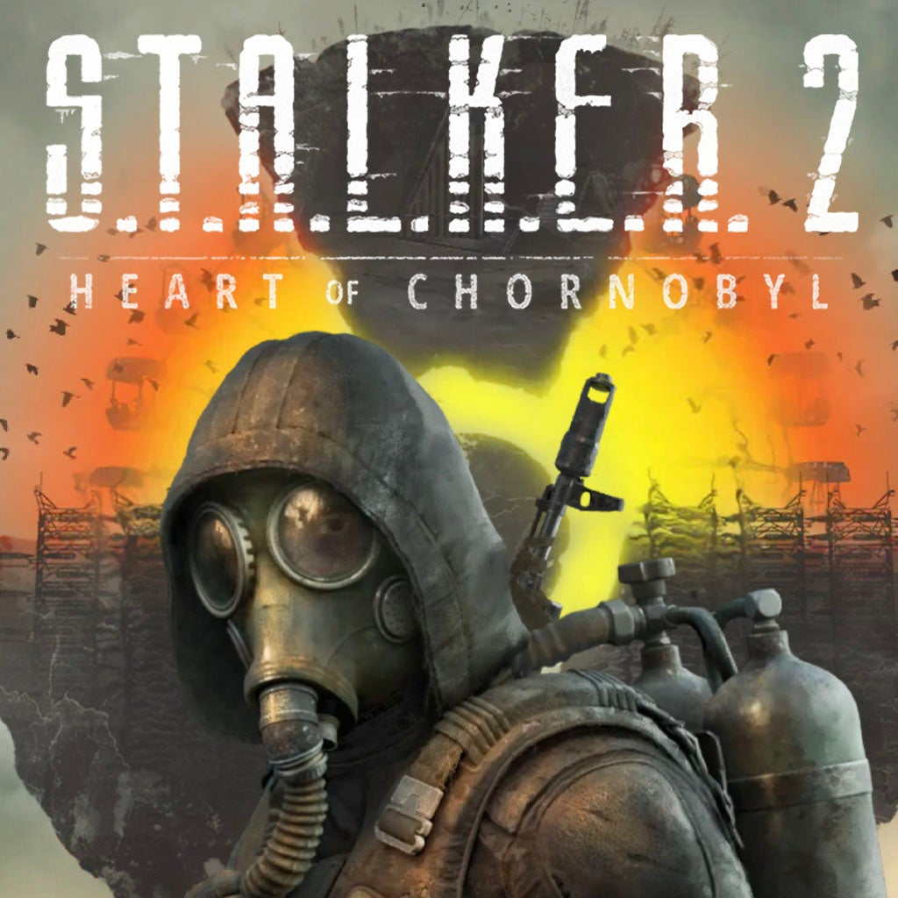

S.T.A.L.K.E.R. 2: Heart of Chornobyl

Overview
S.T.A.L.K.E.R. 2: Heart of Chornobyl is a next-gen survival horror shooter set in the post-apocalyptic Exclusion Zone around Chernobyl. Featuring a branching narrative, dynamic AI, and atmospheric exploration, the game continues the cult-classic S.T.A.L.K.E.R. legacy with modern visuals and intense, immersive gameplay.
Details
- Developer: GSC Game World
- Release Date: September 5, 2024
- Platforms: Xbox Series X|S, PC
- Genres: Survival Horror, FPS, Open World